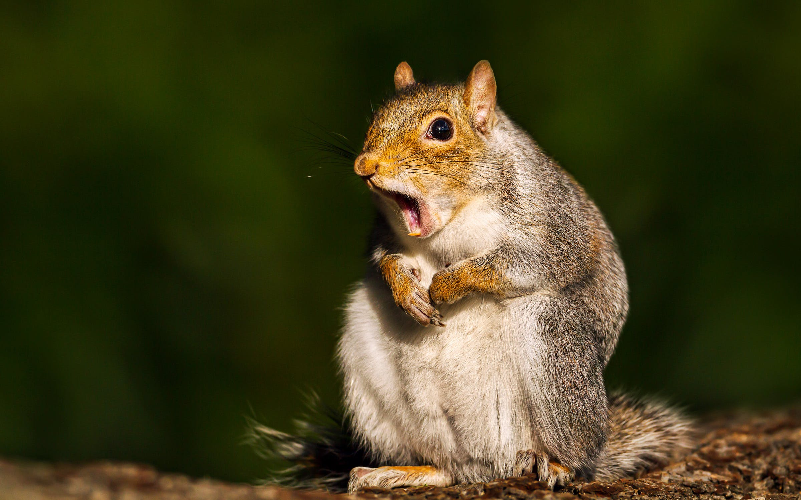

碰氣
凡事不能只碰氣

再碰碰運氣
蓬米醋裏生財力
開心碰碰果
不開心碰碰果
普通的花生
碰氣詩
凡事不能只碰氣；
蓬米醋裏生財力；
本事不足賴焚身；
回眸一顧歷史陳。
松鼠一般以植食性為主，食物主要是種子和果仁，也會吃鳥蛋，水果如櫻桃、草莓等。
部分物種會食昆蟲，其中一些熱帶物種更會為捕食昆蟲而進行遷徙，甚至叼走山雀雛鳥。
松鼠多在春、夏季發情，發情期大約為兩個星期左右。
松鼠繁殖的適齡期，雌性為8－9周齡，雄鼠為9－10周齡。
在非繁殖季節，雌雄性成體分別佔據一定的地方作為自己生活的活動範圍。
在野外，雌性保護一定面積的地盤是為了保護食物，其內不允許其他同種個體進入，對雄性個體也是如此。
但是在繁殖季節，則明顯地放鬆對領域範圍的保護，允許雄性個體進入。
松鼠懷孕的時間大約為35－40天，每年能產3胎左右，每次能產4－6隻。
初生松鼠體形很小，看不見東西，以母體乳汁作為全部營養需求的來源。
松鼠發育很慢，生下將近30天時才睜開眼睛。至一個半月時，小松鼠才願意到室外進行活動。